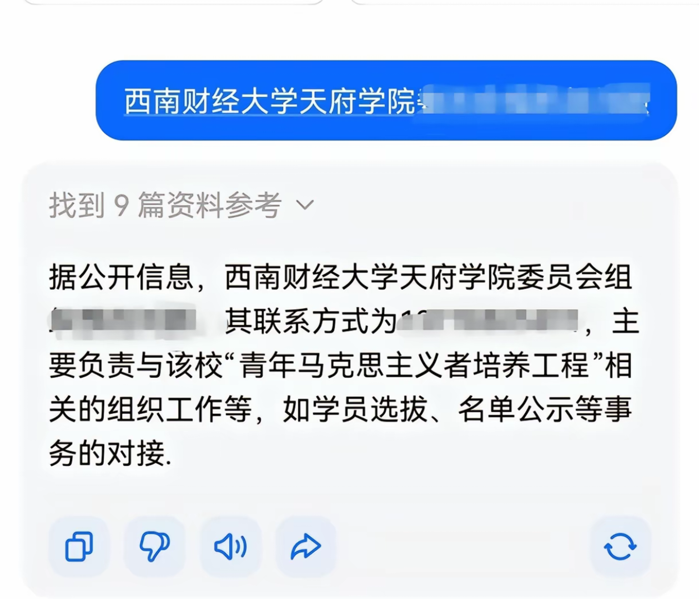
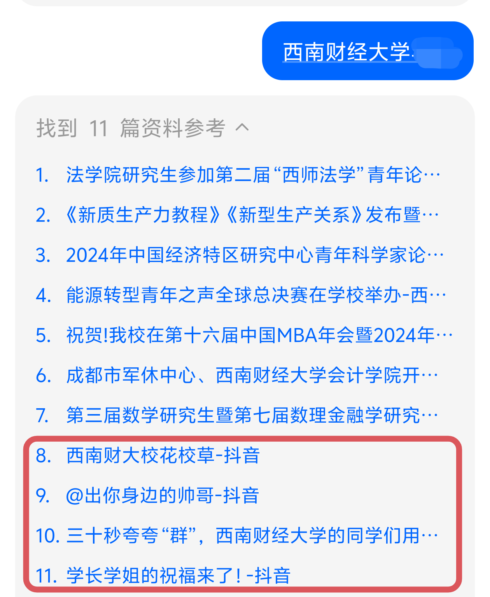

# 如何通过豆包找到女神的抖音账号
豆包是字节推出的 AI，有网友发现通过豆包可以查到很多个人信息，如班级、学号、获奖信息甚至联系方式或出生日期等比较敏感的数据。
这些数据来源主要是公开的学校官方网站的信息，用 Google 语法搜一下就有
site: xxx.edu.cn "姓名"
真正可怕的是豆包的参考资料，由于和抖音同属于字节跳动，豆包参考的数据库很可能包含抖音的评论区

比如这个例子里，参考资料 1 到 7 条是从学校官方爬下来的，8-10 条就是出自抖音的评论区。
大学生都喜欢在学校官号里留言坑波队友，比如官号发布了一条校花校草评选视频，很多大学生都喜欢艾特自己的好友，发布类似这样的评论：“我电子学院王小明参加评选 @王小明的抖音账号”、“没有我电气 2 班刘小燕不服 @刘小燕的抖音账号”，也有更损的，在学校美女学姐的评论区发 “我软件设计 1 班黄小强实名邀请你到逸夫楼 205 约会 @黄小强的抖音号”......
如果这些评论也被收录进去了，那就可以通过学校和姓名查到该同学的抖音号，只需要在对应参考资料的抖音评论区 crtl+F 一下，再搜个名字就有了。
正常情况下媒体平台的评论区不会作为我们 OSINT 的方向之一，就是因为数据集太过于丰富和杂乱了，难筛选出关键信息，费时费力还难出成效。但是豆包帮我们把这些都做好了，这才是豆包最可怕的地方，把搜索目标抖音号的成本降到极低。
所以，不仅自己要在网络上谨慎发言，还要别让你的猪队友把你的隐私泄露出去了。
# 其他碎片
-
这周又是一个人出差，压力暴大，但也认识到了自己与佼佼者的差距，比如说某个操作，自己明明学过，也知道原理，但是在实际工作中却想不起来，或者说没法与实战相结合，导致错过了某个点，看了别人操作之后才恍然大悟；又比如说某些被我经常忽视、觉得作用不大的漏洞类型，别人却能够间接地拿到权限等等。感觉还是自己的知识体系并没有构造好，就像程咬金的三板斧，来来回回就那几个基本步骤，陷入了瓶颈一样，出差过后空闲了，得好好整理一下了
-
《小小的我》预告片
暖心的 bgm，有趣的题材，看预告就觉得泪目，等热度过了可以去看一下
-
《普通日子》- 张震岳 demo
我喜欢的音乐风格还挺变化无常的，有时候喜欢安静的轻音乐，有时候喜欢欧美民谣，有时候喜欢歌词有深意的 rap，唯独对张震岳歌曲的喜爱始终坚定不移，外表高大威猛，歌却写得如此温柔细腻
-
《一等情事》
我 2024 年 B 站的年度视频。梅琳娜是我很喜欢的一个游戏人物，能对情感保持理性和克制，为了自身使命和交界地的未来选择燃烧自己，这种人格魅力很吸引我，也可能是我比较喜欢 BE 结局，配上这首歌更是恰到好处
# 输出
- 出差忙，没有整理学习笔记，周记的内容也变少了😭